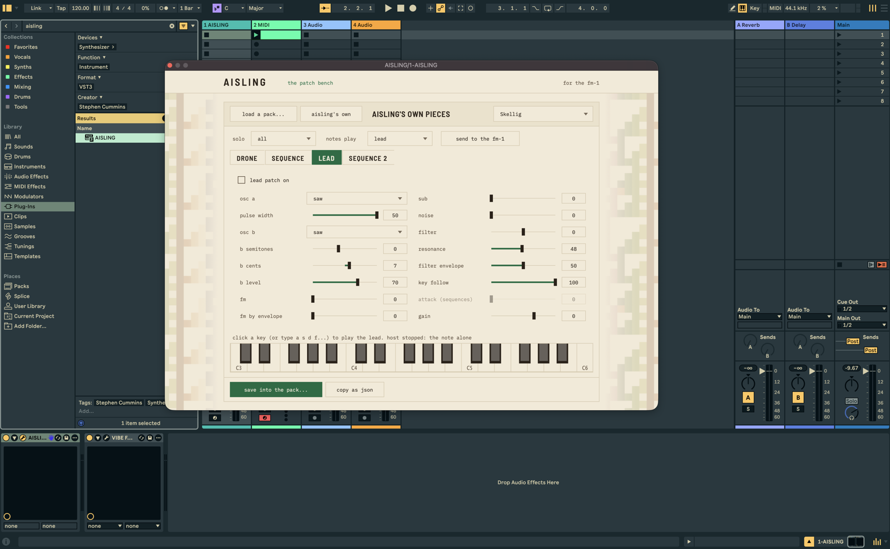

plug-in · the patch bench
VST3, Audio Unit and an app · for AISLING 1.6 and later
Plug-in
The patch bench: AISLING's engine in a DAW.
Make a pack piece's own sounds by ear, hear them on the FM-1 as you turn, and save them into the pack.
The bench
What it is
The plug-in is the FM-1's engine, the same C, on a track in a DAW. It is for making a sound pack piece's Patch: a sound of your own for its Drone, Sequence, Lead or Sequence 2.

- The piece plays in the host's time. It starts with the transport, on the host's sixteenths, at the host's tempo.
- It is not a way to play AISLING without an FM-1. For that there is the emulator. This is a workbench for sounds.
- A pack with a patch needs AISLING 1.6 on the FM-1. One without stays a 1.5 pack.
Getting it
Build it from the source
There is no download yet. It is built from the source, in the plugin folder, with CMake.
git clone https://github.com/stephencummins/fm1-aisling cd fm1-aisling cmake -S plugin -B plugin/build cmake --build plugin/build -j8
- The build puts it in place: AISLING.vst3 and AISLING.component go into ~/Library/Audio/Plug-Ins, and there is an app that runs by itself.
- JUCE 8 is fetched the first time, so that run needs the internet and takes a while.
- In Ableton Live: rescan plug-ins, then find AISLING under Plug-Ins and drop it on a MIDI track.
Its own account, with the tests, is plugin/README.md in the source.
The sound
Shape a sound
A layer's Patch is sixteen numbers: two oscillators, a sub, noise, a filter and its envelope. Each is a control on the panel and a parameter in the host, so it can be automated or put on a controller.
- Choose a pieceload a pack… takes an .aispack; choose a piece from it. Or shape one of AISLING's own eight to try.
- Press playIn the host. The piece starts with it.
- Open a layerThe tabs: Drone, Sequence, Lead, Sequence 2.
- Turn a controlTouching one ticks patch on for that layer. Unticked, the layer keeps the piece's own voice. Hover over a control for what it does.
- Solo itsolo plays one layer alone, to hear the sound without the rest.
- Play itThe keys under the page play the open layer. notes play sends a MIDI clip or a keyboard to the Lead or a Sequence, the exact notes.
- With the host stopped, a key plays its note alone.
- The Drone has no keys. It holds the piece's chord.
- Sequence 2 is silent in a piece that has none: Skellig, for one.
- Choosing another piece keeps the one you leave as you made it, until another pack is loaded or the plug-in closes. Only saving writes it.
The FM-1
Hear it on the FM-1, and save
With an FM-1 on USB, tick send to the fm-1 and the FM-1 plays each patch as you shape it.
| To | Do this |
|---|---|
| Hear it on the FM-1 | The FM-1 must have the same pack (by its name) and be on the same piece. If not, it keeps its own voices and the line beside the box says why. |
| Get the pack's sound back | Untick the box, close the plug-in, or switch the FM-1 off. Nothing was stored on it. |
| Keep a sound | save into the pack… writes the pack with this piece's patches in it. Add it on the Packs page and install it as any other. |
| Have it as numbers | copy as json gives the piece's patch block, for a pack built from a file. |
- It goes on sending with its window closed, for as long as it is on a track in an open set. Untick the box to hear what the pack itself holds.
- One at a time on the link: close the editor and the Packs page first.
- One AISLING in a set. A second one stays silent and says so.
- The engine runs at 44,100. At other rates its sound is resampled, about 2 ms late, which the host is told.
Tried here · Built on a Mac and loaded as a VST3 in Ableton Live 12. With an FM-1 on USB, the FM-1's sound followed the sliders. A Lead patch saved into a pack from the plug-in was installed on an FM-1 and was still there after switching it off and on.
Not tried here · Windows. Hosts other than Ableton Live. Tempos outside AISLING's own 60 to 160.